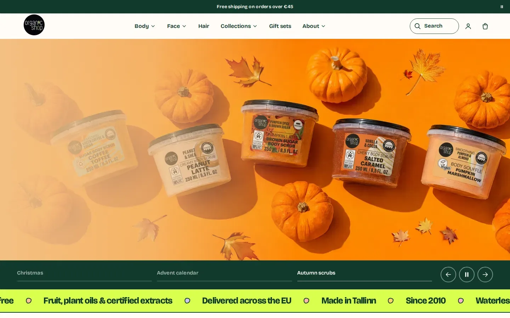
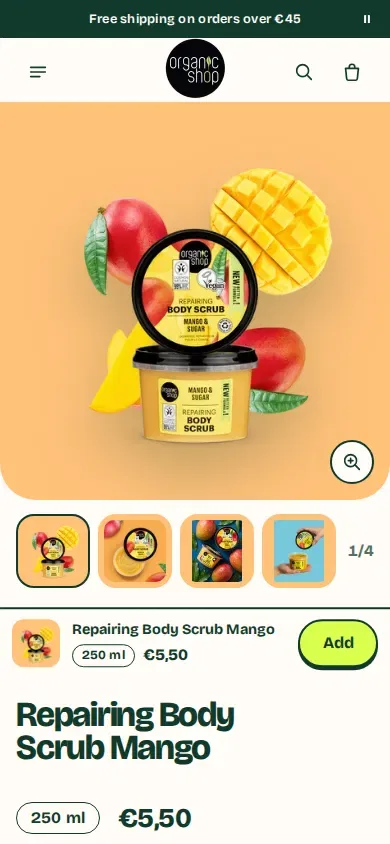
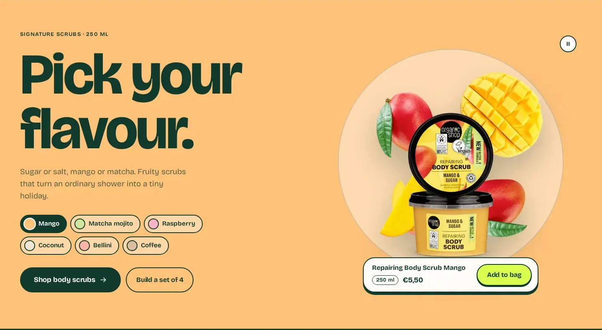
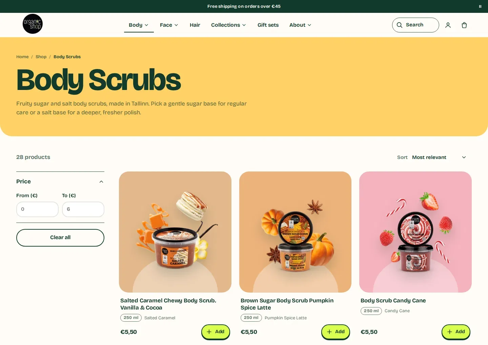
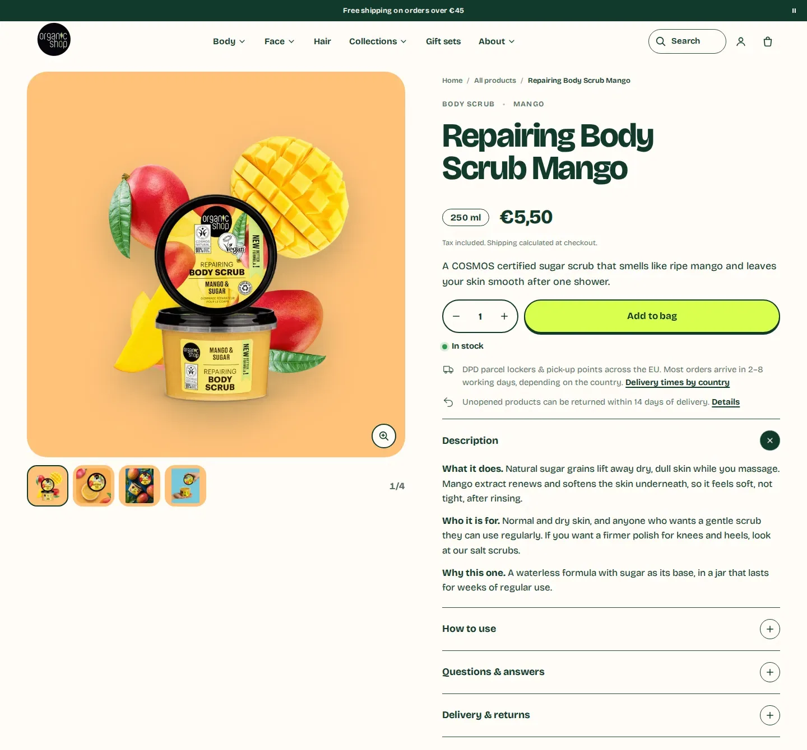
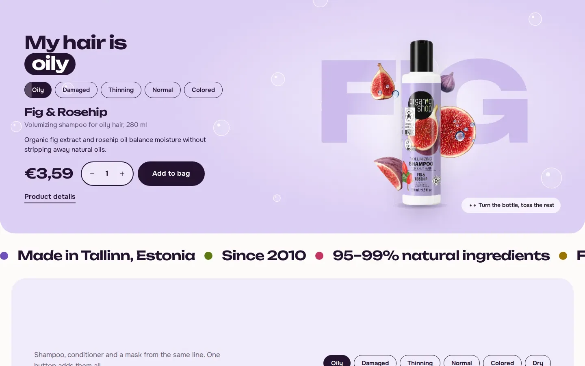
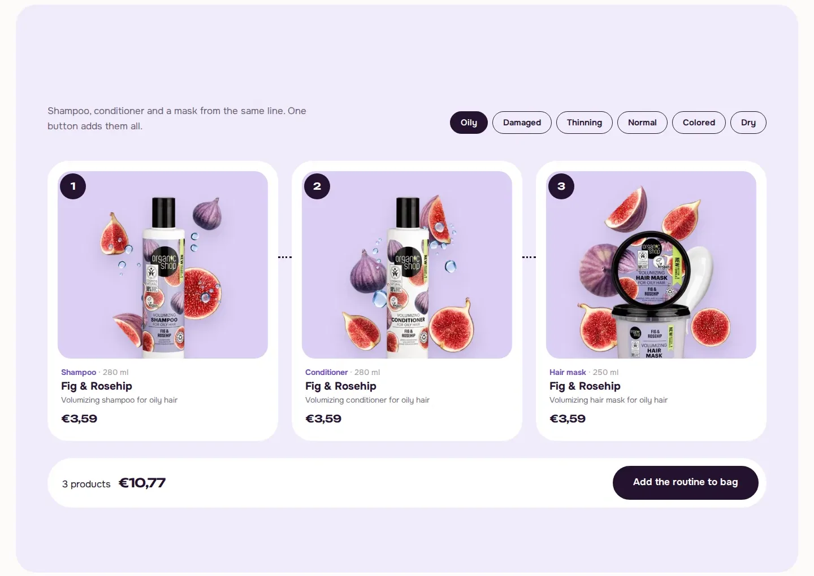

05Organic Shop· Online store redesign · unofficial concept
“Which one is for me?”
Organic Shop makes natural cosmetics in Tallinn and sells a very large range. A shelf of two hundred similar jars and bottles is hard to choose from, so in my redesign concept the store asks the buyer’s question first and sorts the shelf by the answer.
- Role
- Solo and self-initiated: UX review of the live site, concept, UI. Theme code written with Claude under my direction
- When
- October to November 2026
- Built with
- Shopify theme (Liquid, CSS, JavaScript), Figma. AI: Claude
- Status
- Independent concept, not affiliated with Organic Shop. Built as a working theme with the store’s real products
- Who did what
- Me: the review, the concept, sign-off on every screen. Claude: the theme code


01The question
Stores are sorted by product line. People arrive with a wish.
Nobody walks in looking for “the Fig & Rosehip line”. They want a scrub that smells of mango, or a shampoo for oily hair. The catalogue knows the answer, but the visitor has to translate the wish into the store’s language first.
So the first screen of each shelf does the translating.
This is a view from outside. The brand knows what I cannot: what sells, what is returned, what its buyers search for. I would begin with that data and with what already works on the live site.
02The shelf
“Pick your flavour.” Scrubs are bought by scent, shampoo by hair type.
Organic Shop makes natural cosmetics in Tallinn. Its best-known product is a body scrub that comes in a couple of dozen flavours, and nobody compares scrubs by formula. So the scrub shelf switches by scent, and the page takes the colour of the jar.
For hair the question is different, so that part of the store starts from a sentence the visitor finishes: “My hair is oily”. The store’s real products and names are used throughout, so the concept can be judged as a store and not as a poster.





03What I decided
- 1
The menu is the buyer’s own words
Scents for scrubs, hair types for hair care. Product lines stay, one level down.
- 2
The button is on the first screen
The chosen jar comes with its size, its price and Add to bag, so choosing and buying are one step.
- 3
A product page answers three questions
What it does, who it is for, why this one. Then how to use it and the questions people ask.
- 4
Doubts are answered next to the button
Stock, delivery and the 14-day return sit under Add to bag, not in the footer.
- 5
A routine is one purchase
Shampoo, conditioner and mask from one line are steps 1, 2, 3 with a single button.
- 6
Text that helps search and people at once
A short guide under the catalogue grid (sugar or salt, how to use a scrub) instead of a block of keywords.
The concept has not been tested with shoppers or shown to the company. The next honest step would be five people and one task: “find a scrub you would buy as a gift”.